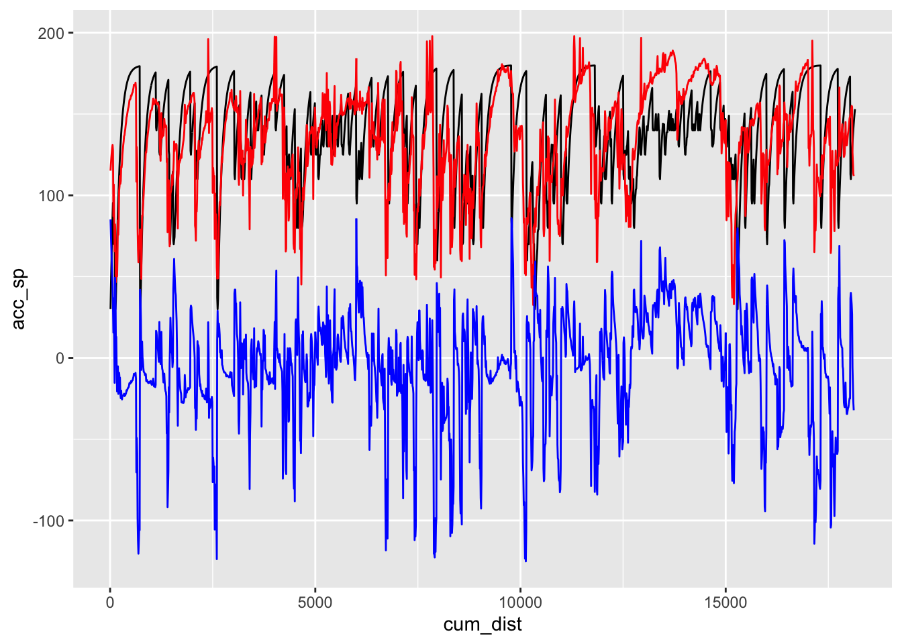
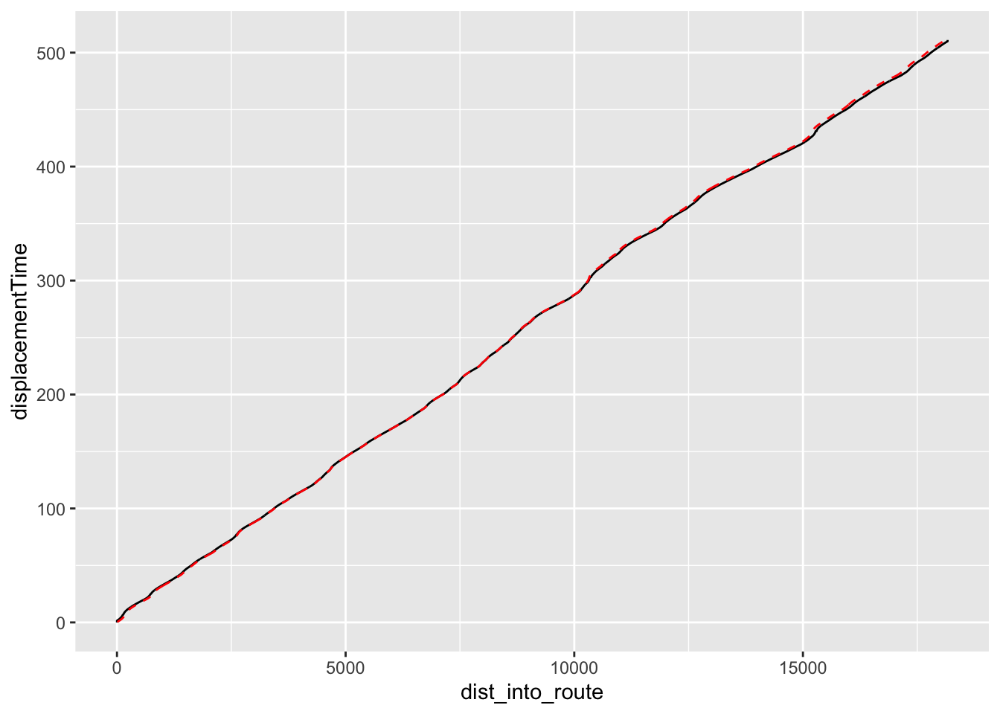
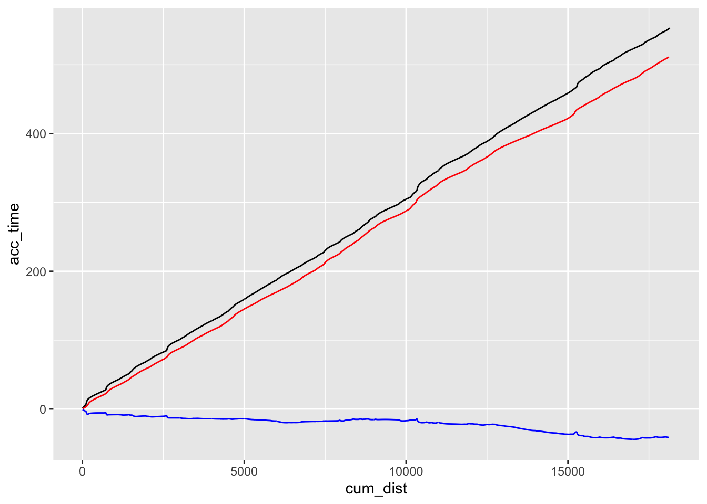
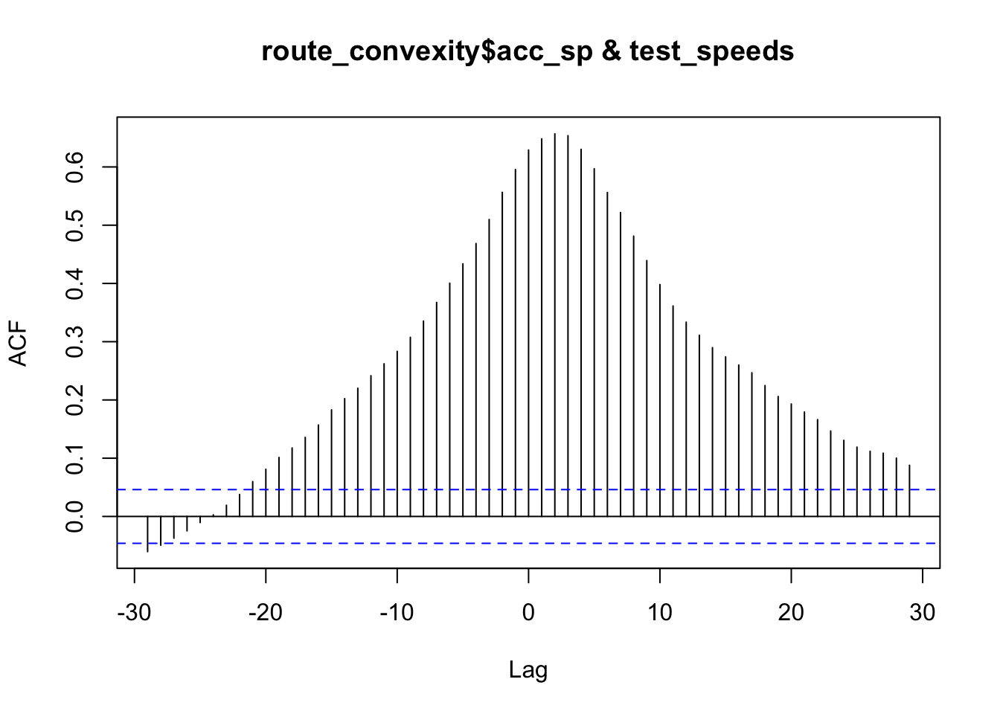
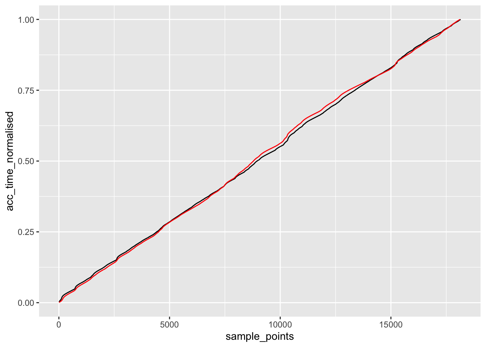
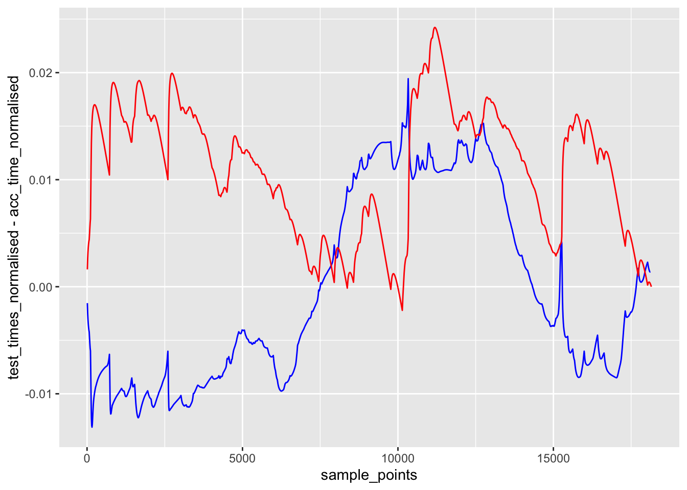
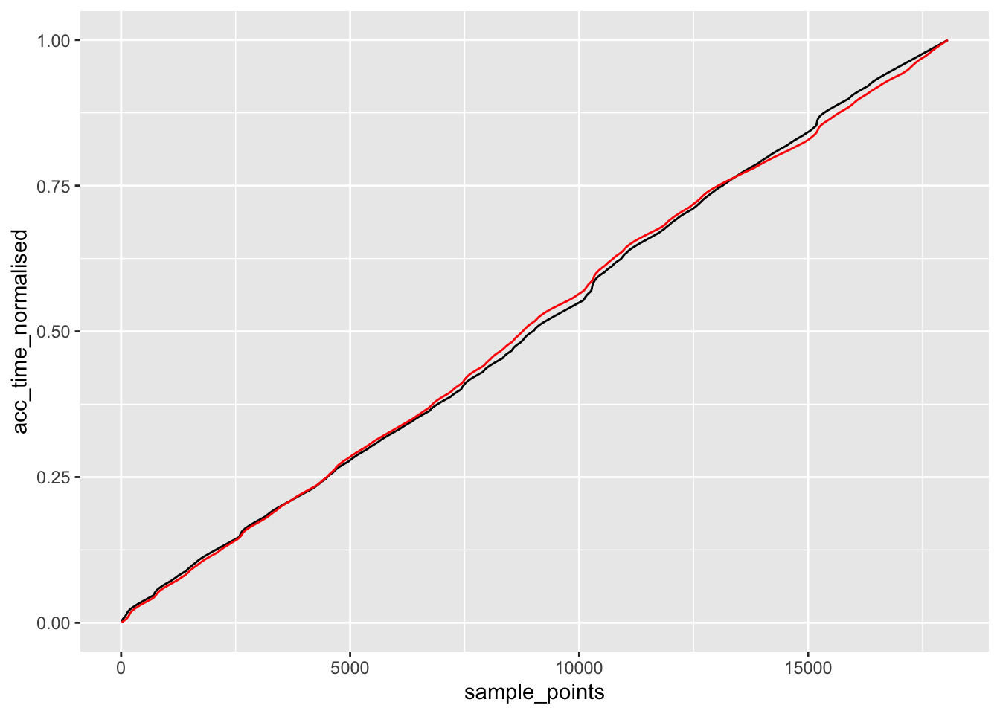
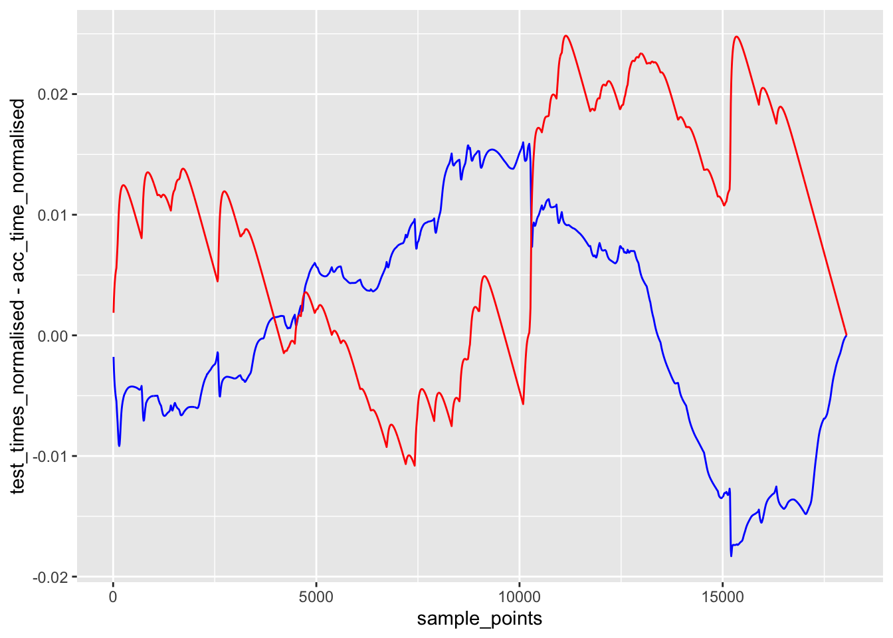

18 Validating the Speed Model
We can use the telemetry from a route to validate (or not!) our speed model. So let’s have a go at that…
We already have a stage route available, so let’s recap how to generate the speed model from a stage route. To ty to improve the model, we can use the smmoothed route. For many parts of the stage, the smoothed route is likely to give a better estimate of the line. However, for certain stage features, such as hairpins, the smoothing may be over-optimistic and take an impossible line.
#stepdist = 10
#window = 20
# Original route: stage_route_utm
# Smooth route: smooth_route_utm
route_ = smooth_route_utm
route_convexity = get_route_convexity(route_, stepdist, window) %>%
mutate(radius = curvatures(.)) %>%
corner_speed_model(speed_modifier=-1) %>%
acceleration_model(acc=0.1, dec=0.05)
# Generate speed points at same sample distances as in speed model
sample_points = route_convexity$cum_distTo validate the model, we need to ensure that we are testing the telemetry within the buffered route area and also ensure we are using similar sample distances.
buffer_width = 50
buffered_route = get_buffered_route(stage_route_utm, buffer_width,
crs=original_crs, utm=FALSE)
telem_df_full_test_utm = get_full_telem(file.path(path, fn), utm=TRUE)
buffered_telem_test_utm = get_route_telem(stage_route_utm,
telem_df_full_test_utm)
trj_buffered_test = buffered_telem_test_utm %>%
telemetry_full_trajectory() %>%
mutate(dist_into_route = dist_into_route(., stage_route_utm))
# Estimate based on telemetry
test_speeds = ts_estimator(trj_buffered_test,
"cum_dist", "speed", sample_points)
#test_speeds = test_estimator(sample_points)We can plot the actual speed (as captured telemetry) along with the interpolated speed at regular points along the stage to check the behaviour of the interpolator.
# Just quickly check that the sample speed model approximates the raw data
ggplot() +
geom_line(data=trj_buffered_test,
aes(x=dist_into_route, y=speed)) +
geom_line(aes(x=sample_points, y=test_speeds),
color='red', linetype = "dashed")
Comparing the traces, the simple estimator appears to do a reasonable job of interpolating speeds between the sample points, which means we can get a reasonable estimate of speed, from the telemetry, at any point along the route.
How well does the time into stage interpolation work (which is to say: can we reliably interpolate the time into stage from a telemetry based model)?
test_times = ts_estimator(trj_buffered_test,
"cum_dist", "displacementTime", sample_points)
ggplot() +
geom_line(data=trj_buffered_test,
aes(x=dist_into_route, y=displacementTime)) +
geom_line(aes(x=sample_points, y=test_times),
color='red', linetype = "dashed")
Again, that looks reasonable.
Now let’s see how our simple speed model works. To begin with, how well do the speeds predicted by the speed model, based on stage route analysis, compared with speeds captured from telemetry?
# Just quickly check that the sample speed model approximates the raw data
ggplot() +
geom_line(data=route_convexity,
aes(x=cum_dist, y=acc_sp)) +
geom_line(aes(x=sample_points, y=test_speeds),
color='red') +
geom_line(aes(x=sample_points, y=test_speeds - route_convexity$acc_sp),
color='blue')
We can also find a simple cross correlation between the speed model and some speed telemetry data:
speed_correlation = ccf(route_convexity$acc_sp, test_speeds, na.action=na.pass)
speed_correlation##
## Autocorrelations of series 'X', by lag
##
## -29 -28 -27 -26 -25 -24 -23 -22 -21 -20 -19
## -0.060 -0.049 -0.037 -0.025 -0.010 0.003 0.019 0.038 0.060 0.081 0.101
## -18 -17 -16 -15 -14 -13 -12 -11 -10 -9 -8
## 0.118 0.136 0.157 0.183 0.202 0.220 0.242 0.262 0.283 0.308 0.335
## -7 -6 -5 -4 -3 -2 -1 0 1 2 3
## 0.367 0.400 0.434 0.469 0.510 0.556 0.596 0.629 0.648 0.657 0.654
## 4 5 6 7 8 9 10 11 12 13 14
## 0.630 0.597 0.556 0.522 0.481 0.439 0.398 0.361 0.334 0.311 0.290
## 15 16 17 18 19 20 21 22 23 24 25
## 0.274 0.260 0.247 0.225 0.206 0.193 0.179 0.166 0.147 0.131 0.119
## 26 27 28 29
## 0.112 0.109 0.100 0.088The model is a bit rough, bit captures some of the major features, and gives us a crude approximation of speed.
Perhaps more important from the perspective of using the speed model as a basis for predictions of time into stage, let’s see how the time into stage prediction compares with the actual time into stage at particular locations as captured from telemetry:
ggplot() +
geom_line(data=route_convexity,
aes(x=cum_dist, y=acc_time)) +
geom_line(aes(x=sample_points, y=test_times),
color='red') +
geom_line(aes(x=sample_points, y=test_times - route_convexity$acc_time),
color='blue')
There appear to be two types of error in the prediction: a general trend component error, where the prediction appears to drift consistently from the actual time into stage as captured from telemetry; and a possible difference in “shape” of the lines.
We can modify the model to account for the linear dirft by tweaking the cornering speed model. A trivial way to do this is to fettle the speed_modifier parameter in the corner_speed_model() function.
We can detrend the prediction error to get a feel how the “shape” of the predicted time drifts from the actual time. One way of detrending the data is to create a linear model of it and then inspect the residual error around that model.
linear_time_model = lm((test_times - route_convexity$acc_time) ~ c(1:length(test_times)))
plot(resid(linear_time_model), type="l") 
By inspection of the elevation map for this stage, we may be lossing time in the model compared to the actual telemetry on downhill sections. The speed model does not currently take elevation / elevation change into account. But perhaps it should, particularly on downhill sections?
Another approach is to normalise the curves and then compare them:
test_times_normalised = test_times / max(test_times, na.rm=T)
acc_time_normalised = route_convexity$acc_time / max(route_convexity$acc_time,
na.rm=T)
ggplot() +
geom_line(aes(x=sample_points, y=acc_time_normalised)) +
geom_line(aes(x=sample_points, y=test_times_normalised),
color='red')
We can also compare the error between the actual times into stage and the predicted times, and the actual times into stage compared to a linear model.
If the error of the predicted time into stage is less than that of the linear model, then it adds some value to time predictions based on sparse telemetry.
ggplot() +
geom_line(aes(x=sample_points, y=test_times_normalised - acc_time_normalised),
color='blue') +
geom_line(aes(x=sample_points,
y=acc_time_normalised - sample_points/max(sample_points, na.rm=T)),
color='red')